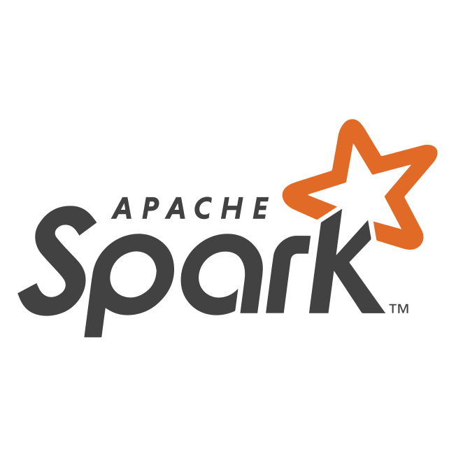
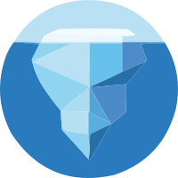

글쓰는 개발자
안녕하세요! '왜?'와 '어떻게?' 라는 질문을 던지며
도전하고 성장하는 데이터 엔지니어 김광현입니다.
"왜?"를 먼저 묻는 데이터 엔지니어
안녕하세요, 3년차 데이터 엔지니어 김광현입니다.
구현보다 "왜 이 기술인가"를 먼저 묻고 시작합니다. 오버엔지니어링보다 적정 기술을, 복잡한 스택보다 문제에 맞는 구조를 선택합니다. 작성한 코드가 동작하는 것에 만족하지 않고, 그 선택의 이유를 항상 설명할 수 있는 엔지니어이고 싶습니다.
슬로프에서는 빠르게 내려가고, 캠핑장에서는 완전히 멈춥니다.
몰입할 때 깊이 몰입하고, 전환할 때 확실히 전환하는 리듬이 제 일하는 방식에도 그대로 묻어납니다. 문제에 빠져들 땐 끝까지 파고, 한 발 물러서야 할 땐 과감히 시선을 돌립니다. 그 반복이 더 나은 설계를 만든다고 믿습니다.

삽질하고, 부수고, 다시 만들면서 배운 것들을 기록합니다. 실전에서 겪은 장애 복구, 파이프라인 재설계, 데이터 품질 이슈 같은 현장의 이야기를 담고 있습니다.
 Next
Next
관심이 있고, 사용할 수 있는 기술입니다.



